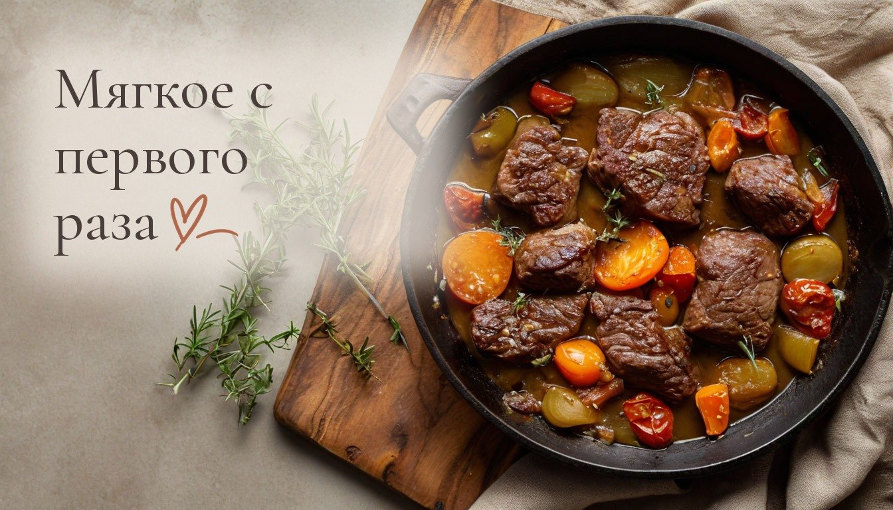
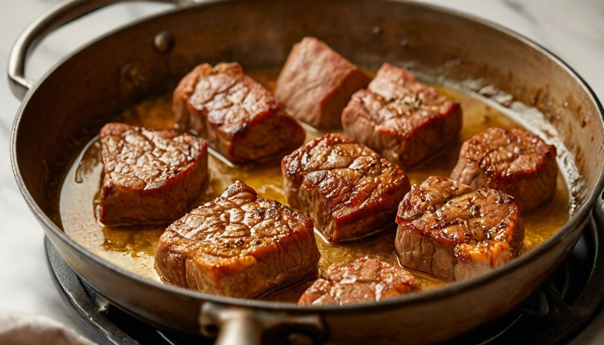
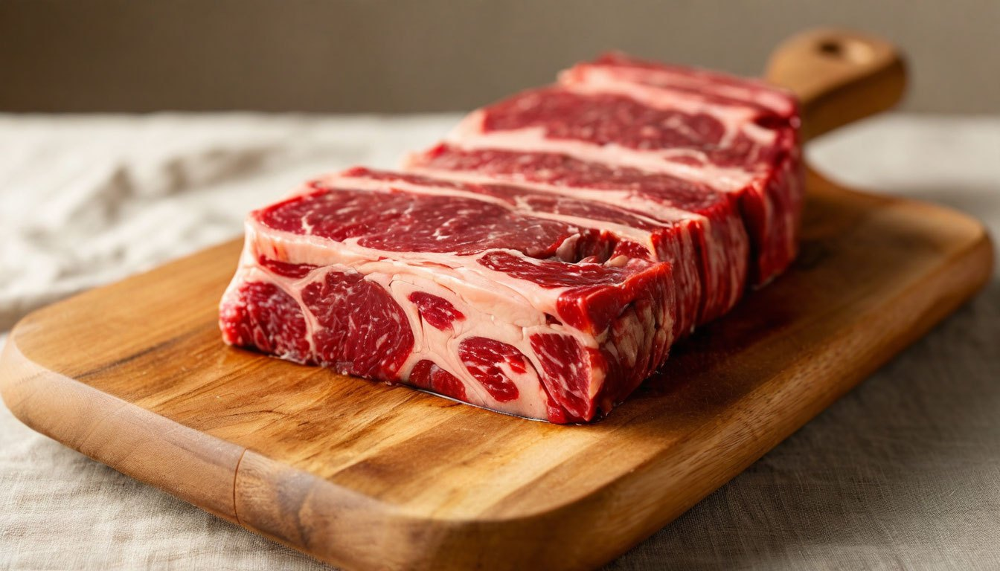

5 ошибок, из-за которых мясо получается жёстким, даже если тушить его дольше

Жёсткое мясо редко бывает виновато само. Чаще его портят несколько привычных шагов, и тогда даже лишний час на плите уже не спасает.
У нас дома мясо любят все: муж, сын и дочка. Поэтому готовлю я его часто, и рано или поздно начинаешь замечать, почему один и тот же кусок в один день получается мягким, а в другой его невозможно прожевать.
Вот пять ошибок, которые встречаются чаще всего.
Ошибка №1: брать для тушения и для жарки один и тот же кусок
У разных частей туши разное строение. В лопатке, голяшке и грудинке много соединительной ткани: если их быстро обжарить, они остаются жёсткими. А нежная вырезка от долгого тушения, наоборот, становится сухой и волокнистой.
Что делать: для быстрой жарки брать вырезку, толстый или тонкий край, для тушения и супа лопатку, голяшку, грудинку. Если сомневаетесь, спросите в мясном отделе, для чего подойдёт кусок: там обычно подскажут. А если кусок для жарки оказался жестковат, его не поздно потушить.
Ошибка №2: тушить мясо на сильном огне
Кажется, что чем сильнее кипит, тем быстрее приготовится. Но при бурном кипении белки в мясе резко сжимаются и выдавливают влагу, поэтому кусок становится плотным, как резина, сколько бы его ни тушили.
Что делать: после закипания убавить огонь так, чтобы жидкость едва булькала, и накрыть крышкой. Говядине на таком огне нужно от полутора до двух часов, свинине около часа. Если жидкость выкипает, подливать горячую воду, а не холодную: от холодной мясо снова сжимается. Проверять вилкой: готовое мясо легко протыкается и само отходит от волокон.
Ошибка №3: класть в сковороду сразу всё мясо
Когда кусков слишком много, сковорода остывает, и мясо не жарится, а тушится в собственном соку. Корочка не появляется, кусочки становятся серыми, а сок вытекает.
Что делать: хорошо разогреть сковороду и выкладывать мясо в один слой так, чтобы между кусками оставалось немного места. Если не помещается, жарить в два-три захода. Перед жаркой промокнуть мясо бумажным полотенцем, на сухой поверхности корочка появляется быстрее.

Ошибка №4: резать мясо вдоль волокон
Волокна в мясе идут в одном направлении, как нитки. Если резать вдоль них, в каждом кусочке остаются длинные прочные нити, и их приходится долго жевать, даже если мясо приготовлено правильно.

Что делать: перед нарезкой посмотреть, куда идут волокна, и резать поперёк, кусками толщиной около сантиметра. Это работает и для сырого мяса перед жаркой, и для готового перед подачей. Если направление волокон плохо видно, сделайте пробный тонкий срез с края: на нём нити хорошо заметны.
Ошибка №5: резать мясо сразу после готовки
В горячем куске, только что снятом с огня, волокна ещё напряжены и легко отдают сок. Если разрезать его сразу, сок вытекает на доску, и мясо становится суше и жёстче на вкус.
Что делать: дать мясу полежать 5–10 минут на доске или тарелке, неплотно накрыв фольгой. За это время волокна расслабятся, сок останется внутри, и мясо будет сочнее. Тонким отбивным хватит и пары минут, а большому запечённому куску лучше дать постоять минут пятнадцать.
От автора
Мягкое мясо получается не благодаря особому рецепту, а благодаря нескольким простым шагам, которые повторяются каждый раз. Когда они становятся привычкой, готовить проще и спокойнее.
У меня тоже бывает, что спешу и кладу на сковороду всё сразу. Ничего страшного: семья всё равно съест. Но когда я не тороплюсь, разница заметна с первого кусочка.
Подписывайтесь, чтобы не пропустить следующий разбор: как одна большая кастрюля борща кормит семью три дня и не надоедает.
А какая из этих ошибок встречается у вас чаще всего?